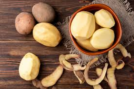
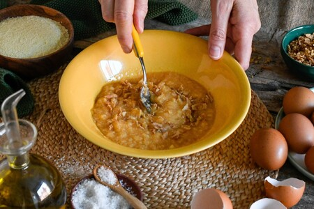

Una receta sencilla, deliciosa y con una pizca de perejil .
Pela y corta las patatas y la cebolla.
Fríe las patatas y la cebolla a fuego medio.

Bate los huevos y mezcla todo en un bol.
Cocina la mezcla en una sartén y añade una pizca de perejil al servir.